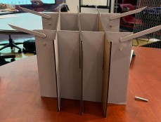

Engineering Projects
Selected Engineering Projects
This page highlights engineering projects involving mechanical design, electronics, fabrication, instrumentation, controls, and experimental testing.
Autonomous Underwater Vehicle — Spectral Light Attenuation Measurement System
Harvey Mudd College | Spring 2026 | Team of 4
Designed and deployed an autonomous underwater vehicle to investigate how visible light intensity and spectral composition change with depth in coastal waters near kelp ecosystems.

Final AUV integrating the structural frame, electronics housing, propulsion system, and environmental sensors.
My Work
- Designed and assembled the PVC structural frame and motor system
- Integrated electronic components into the underwater platform
- Designed and soldered circuitry for pressure and temperature sensing
- Integrated a TCS34725 RGB sensor, MPX5700 pressure sensor, and thermistor with a Teensy 4.1
- Implemented and tested autonomous depth-control behavior
- Collected and processed depth-resolved environmental measurements
- Supported coastal deployment and experimental troubleshooting
Technical Report
The complete project report documents the vehicle design, sensor circuitry, calibration, autonomous control, coastal deployment, and experimental results.
Tools & Skills
Teensy 4.1 • MATLAB • Sensors • Circuit Design • Soldering • Data Acquisition • Feedback Control • Experimental Testing
Mobile Lectern — Client Design Project
Harvey Mudd College | Fall 2025 | Team of 4
Worked with a faculty client to design a lightweight, portable lectern that could be rapidly assembled and disassembled for classroom use.

Final assembled configuration.

Collapsed configuration for portability.
Design Process
- Interviewed the client to identify functional and human-factors requirements
- Translated stakeholder needs into engineering specifications
- Developed and evaluated multiple design concepts
- Created SolidWorks models and engineering drawings
- Fabricated and tested iterative prototypes
- Evaluated setup time, portability, durability, and usability
Final Design
The final design:
- Achieved an average setup time of approximately 1.6 seconds
- Supported loads greater than 12 lb
- Used a collapsible five-panel structure
- Included removable support wings and grip surfaces
- Was produced for approximately $24 in prototype materials
Engineering Drawing Package
The final SolidWorks drawing package documents the complete assembly, individual panels, support wings, fabrication details, process routing, and bill of materials.
Tools & Skills
SolidWorks • Mechanical Design • Engineering Drawings • Prototyping • Fabrication • Client Communication • Design Testing
Hammer — Machining Project
Harvey Mudd College | Fall 2025
Fabricated a functional hammer from raw stock while developing precision machining and manufacturing skills.

Completed hammer fabricated from raw stock using manual machining processes.
My Work
- Machined hammer components using a mill and lathe
- Used a bandsaw and other shop equipment for stock preparation
- Worked from engineering drawings and specified dimensions
- Maintained required dimensional tolerances during fabrication
- Evaluated hardface hardness requirements after machining
Tools & Skills
Milling • Turning • Lathe • Bandsaw • Engineering Drawings • Measurement • Manufacturing